Mt Fuji may be the most famous, but Japan offers more than just the sacred mountain. Over 70 per cent of Japan’s land is covered in mountains and hills; not climbing one is akin to blasphemy. Mt Takao or Mt Mitake are great day trips from Tokyo, but for a full mountain spirit immersion, do a temple stay at Mt Koya in Kansai, which often come with Buddhist-style meals. Be sure to book ahead, as the lodges are popular.
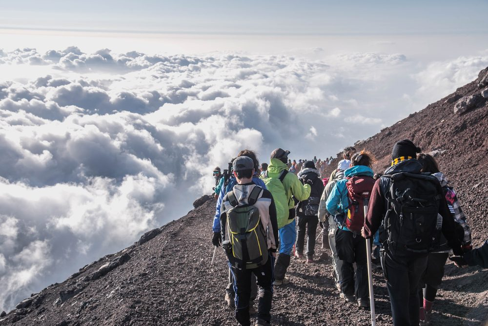 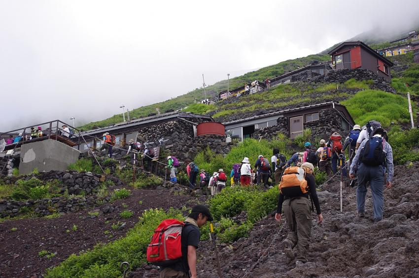Sake, known as nihonshu in the local lingo, is Japan’s national drink. A visit to a sake brewery is an unmissable introduction to the beverage. There’s plenty of misconceptions about sake (no, it’s not like vodka), and where better to dispel them than its place of birth? Kobe’s Nada district has 40-odd breweries, multiple of which offer tours; the Hakutsuru Brewery Museum in particular has easy-to-understand exhibits. Plus, free booze samples – it’s a liquid education.
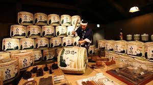 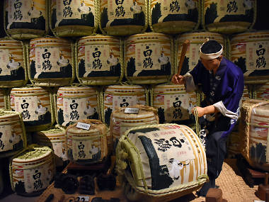The Tokyo Skytree towers over the city at 634 metres. It’s as touristy as they come, but worth every yen. At 42 million inhabitants, Tokyo is the largest city in the world, but you really can’t quite understand what that means until you’ve seen it from above. The 350-metre and 450-metre viewing decks have views of the entire Kanto plain. Go just before sunset to see the sun setting behind Mt Fuji; for an alternative view of the tower itself, you can also go kayaking in the adjacent canal.
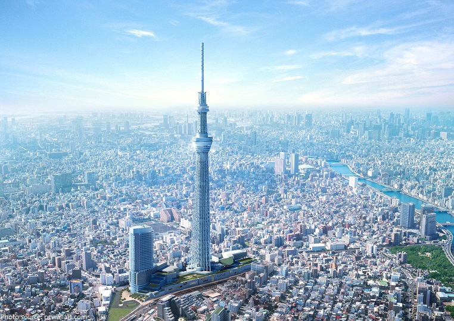 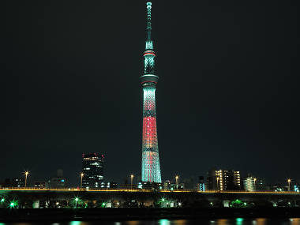Japan’s capital from 794 to 1868, Kyoto is bathed in history. The most iconic remnant of the city’s imperial past is the outrageously gilded Kinkakuji, once a shogun’s retirement villa and now a Zen Buddhist temple.In all, Kyoto boasts 17 World Heritage sites (Kinkakuji and Ryoanji included), but with some 2,000 temples and shrines across the city, not to mention numerous gardens, they represent a fraction of Kyoto’s alluring heritage.
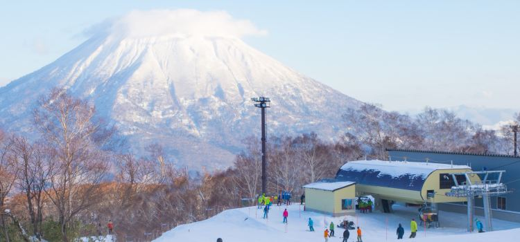 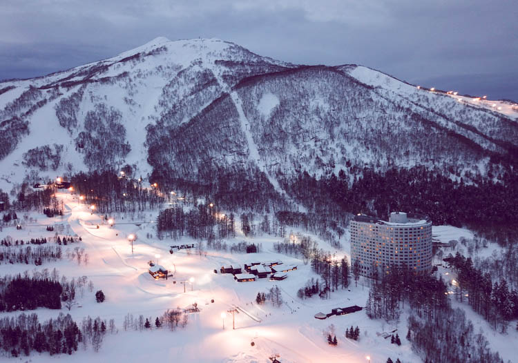This small ski resort town in Hokkaido boasts the finest powder in the country and three major ski resorts to match: Niseko Village, Niseko Annupuri, and the Grand Hirafu/Hanazono.Away from the resorts, the allure is prime backcountry powder and ample opportunities for ice climbing, telemark skiing, and boarding through virgin snow.
Takayama is an utterly gorgeous small town on the edge of the Japan Alps and one of the best less-visited places to go in Japan. I loved wandering the historic centre full of traditional wooden houses, colourful shrines, neatly shaped trees, and bright red bridges over the river.
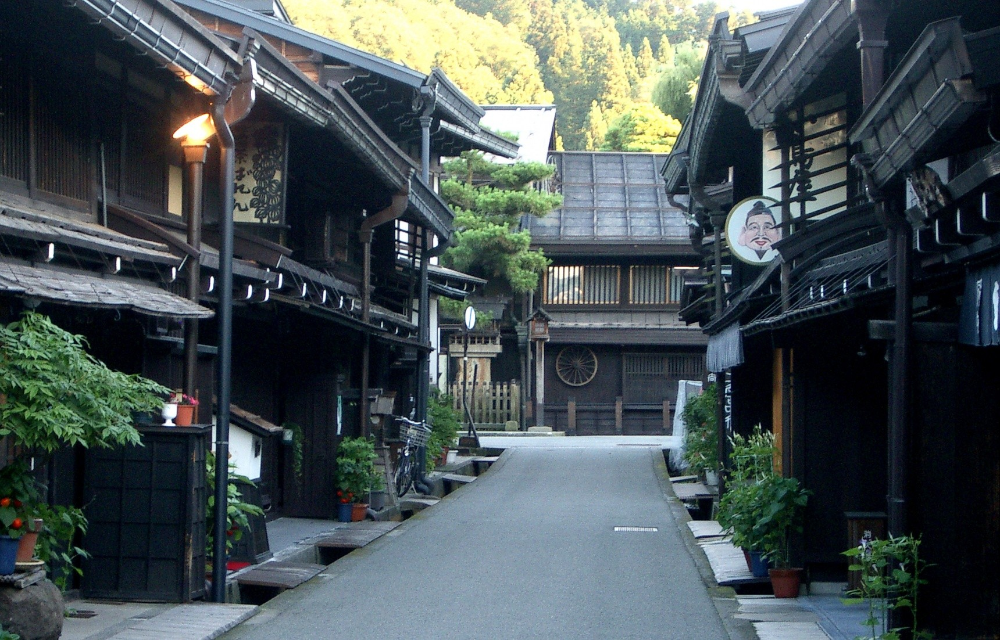 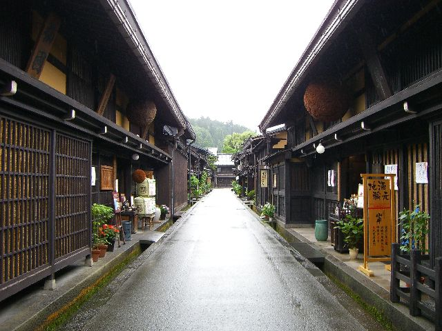Mount Fuji is on most people’s lists of places to visit in Japan, but this must-see Japan landmark can be rather elusive and is often hidden by clouds. There are a number of places you can see the mountain from, but we decided on Hakone because it’s easy to reach from Tokyo and there are lots of other things to do in the area in case we were out of luck with our sighting.
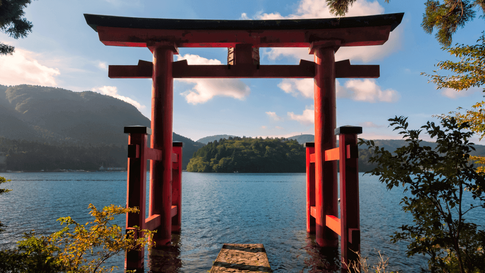 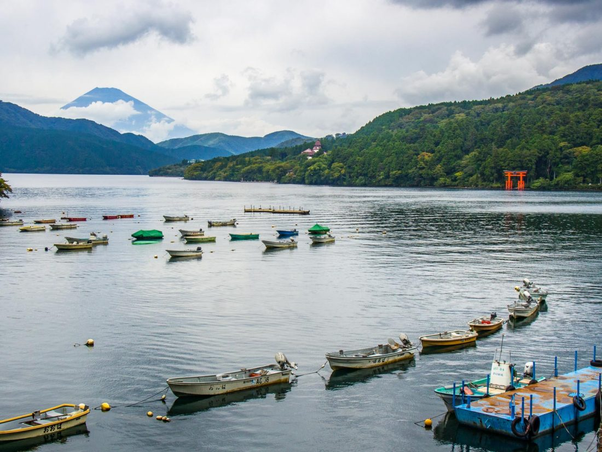Nara was Japan’s first permanent capital and is full of historic treasures including many UNESCO world heritage sites. It’s one of the top Japan attractions and makes a rewarding day trip from Kyoto to visit the temples and wild deer in Nara Park.
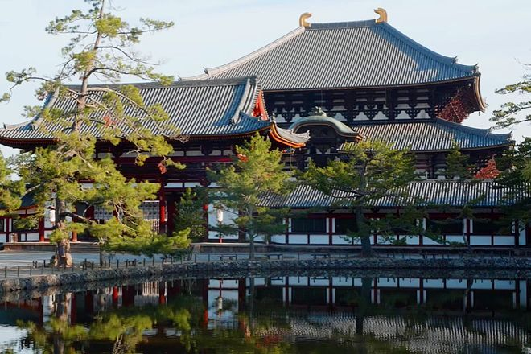
With a size of 23.13 hectares and around 1.5 millions sunflowers, this is one of Japan’s largest sunflower gardens. The beautiful sight of the sunflowers in full bloom from early to mid-August looks as though it has been taken straight of a painting. During this period, you can enjoy the sunflower maze or lazily wonder around the beautiful garden on one of the rental bicycles on offer. Entry into the garden is free.
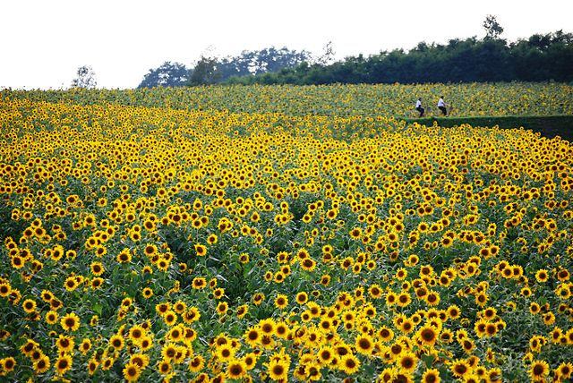 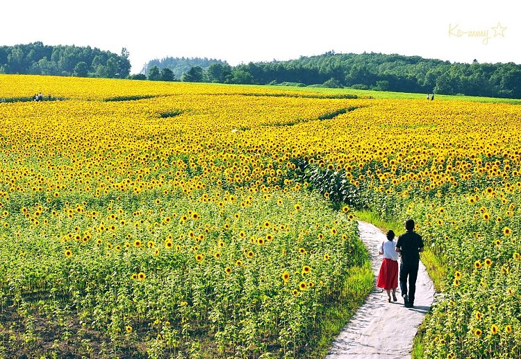In the vast grounds of the Showa Memorial Park, more than 1,500 cherry trees, including 200 or so Somei Yoshina cherry trees, 220,000 tulips of 13 varieties, 1.8 million shirley poppies, 300,000 Iceland poppies, and dainty blue nemophila flowers blossom in the spring. In the summer, you can also enjoy sunflowers, and in autumn, cosmos flowers and maple trees. Entrance to the park is 410 yen for adults over 15, and 80 yen for elementary school and junior high school students.
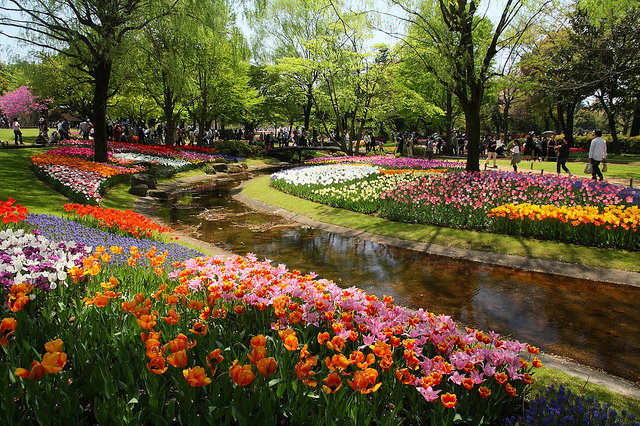 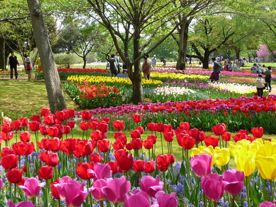


© Sernel Miranda Asunto (2019)